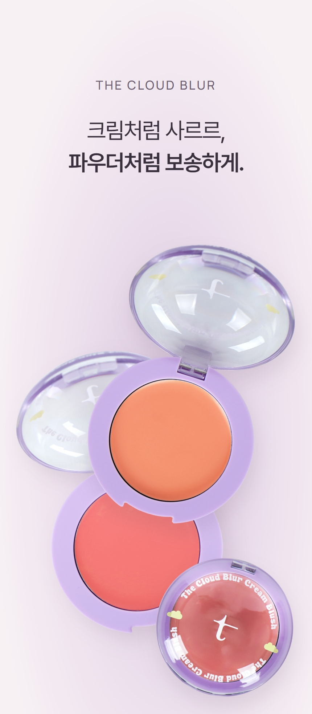
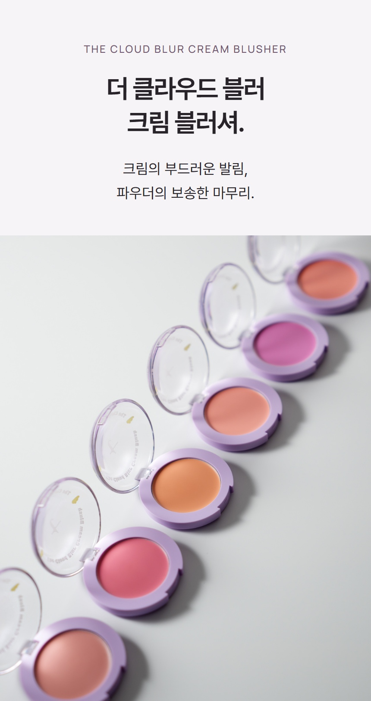
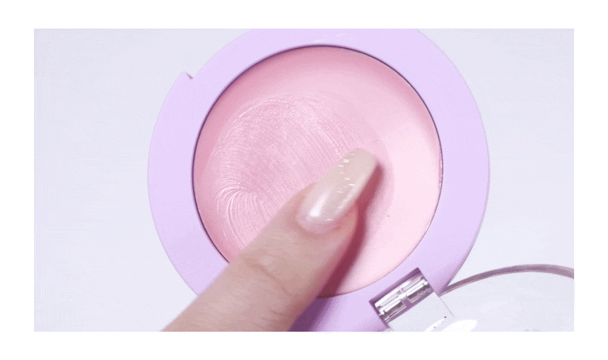
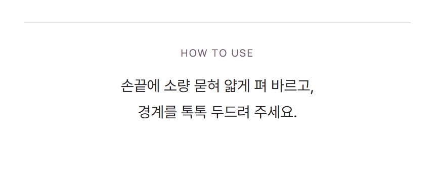
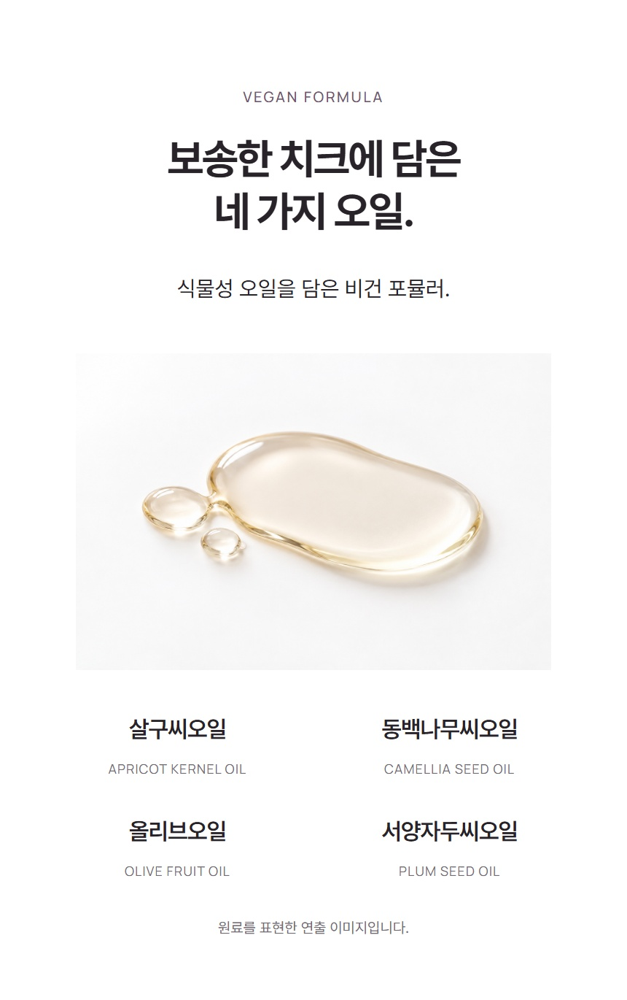
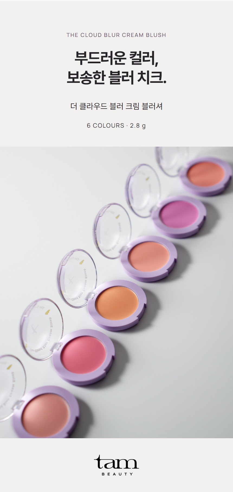

| 용량 및 중량 | 2.8 g I 0.09oz |
|---|---|
| 제품 주요 사양 | 모든 피부 |
| 사용 기한 | 개봉 전 36개월 / 개봉 후 12개월 |
| 사용 방법 | 손가락이나 도구를 이용해 생기가 필요한 부분에 얇게 펴 바르고 가볍게 두드려 밀착시켜줍니다. |
| 화장품책임 판매업자 | 주식회사 에이위즈 |
| 제조국 | 한국 |
| 품질보증 기준 | 본 제품에 이상이 있을 경우, 공정거래 위원회 고시 소비자 분쟁 해결 기준에 따라 보상해 드립니다. |
| 탐뷰티 고객상담실 | 1668-0868( 수신자 요금부담) |
아이소노닐아이소노나노에이트, 실리카, 티타늄디옥사이드, 폴리글리세릴-2트라이아이소스테아레이트, 마이카, 네오펜틸글라이콜다이카프릴레이트/다이카프레이트, 합성왁스, 폴리하이드록시스테아릭애씨드, 세레신, 피이지-10다이메티콘, 메티콘, 황색5호, 레시틴, 글리세릴카프릴레이트, 알루미늄하이드록사이드, 아이소스테아릭애씨드, 아이소프로필미리스테이트, 에틸헥실팔미테이트, 에틸헥실글리세린, 폴리글리세릴-3폴리리시놀리에이트, 적색104호의(1), 토코페릴아세테이트, 적색202호, 동백나무씨오일, 살구씨오일, 올리브오일, 서양자두씨오일
아이소노닐아이소노나노에이트, 실리카, 티타늄디옥사이드, 폴리글리세릴-2트라이아이소스테아레이트, 마이카, 네오펜틸글라이콜다이카프릴레이트/다이카프레이트, 합성왁스, 폴리하이드록시스테아릭애씨드, 세레신, 피이지-10다이메티콘, 메티콘, 레시틴, 황색5호, 글리세릴카프릴레이트, 알루미늄하이드록사이드, 아이소스테아릭애씨드, 아이소프로필미리스테이트, 에틸헥실팔미테이트, 적색202호, 에틸헥실글리세린, 폴리글리세릴-3폴리리시놀리에이트, 황색4호, 다이아이소스테아릴말레이트, 흑색산화철, 토코페릴아세테이트, 살구씨오일, 동백나무씨오일, 올리브오일, 서양자두씨오일
아이소노닐아이소노나노에이트, 실리카, 티타늄디옥사이드, 폴리글리세릴-2트라이아이소스테아레이트, 마이카, 네오펜틸글라이콜다이카프릴레이트/다이카프레이트, 합성왁스, 폴리하이드록시스테아릭애씨드, 세레신, 적색104호의(1), 피이지-10다이메티콘, 메티콘, 레시틴, 글리세릴카프릴레이트, 알루미늄하이드록사이드, 아이소스테아릭애씨드, 아이소프로필미리스테이트, 에틸헥실팔미테이트, 에틸헥실글리세린, 폴리글리세릴-3폴리리시놀리에이트, 황색산화철, 청색1호, 토코페릴아세테이트, 동백나무씨오일, 살구씨오일, 올리브오일, 서양자두씨오일
아이소노닐아이소노나노에이트, 실리카, 티타늄디옥사이드, 폴리글리세릴-2트라이아이소스테아레이트, 마이카, 네오펜틸글라이콜다이카프릴레이트/다이카프레이트, 합성왁스, 폴리하이드록시스테아릭애씨드, 세레신, 피이지-10다이메티콘, 황색5호, 메티콘, 레시틴, 글리세릴카프릴레이트, 알루미늄하이드록사이드, 아이소스테아릭애씨드, 아이소프로필미리스테이트, 에틸헥실팔미테이트, 적색104호의(1), 에틸헥실글리세린, 폴리글리세릴-3폴리리시놀리에이트, 황색산화철, 적색202호, 토코페릴아세테이트, 동백나무씨오일, 살구씨오일, 올리브오일, 서양자두씨오일
아이소노닐아이소노나노에이트, 실리카, 티타늄디옥사이드, 폴리글리세릴-2트라이아이소스테아레이트, 마이카, 네오펜틸글라이콜다이카프릴레이트/다이카프레이트, 합성왁스, 폴리하이드록시스테아릭애씨드, 세레신, 피이지-10다이메티콘, 메티콘, 레시틴, 황색5호, 글리세릴카프릴레이트, 알루미늄하이드록사이드, 적색202호, 아이소스테아릭애씨드, 아이소프로필미리스테이트, 에틸헥실팔미테이트, 에틸헥실글리세린, 폴리글리세릴-3폴리리시놀리에이트, 적색201호, 토코페릴아세테이트, 살구씨오일, 동백나무씨오일, 올리브오일, 서양자두씨오일
아이소노닐아이소노나노에이트, 실리카, 티타늄디옥사이드, 폴리글리세릴-2트라이아이소스테아레이트, 마이카, 네오펜틸글라이콜다이카프릴레이트/다이카프레이트, 합성왁스, 폴리하이드록시스테아릭애씨드, 세레신, 피이지-10다이메티콘, 황색5호, 메티콘, 레시틴, 글리세릴카프릴레이트, 알루미늄하이드록사이드, 황색산화철, 아이소스테아릭애씨드, 아이소프로필미리스테이트, 에틸헥실팔미테이트, 에틸헥실글리세린, 폴리글리세릴-3폴리리시놀리에이트, 적색202호, 토코페릴아세테이트, 살구씨오일, 동백나무씨오일, 올리브오일, 서양자두씨오일